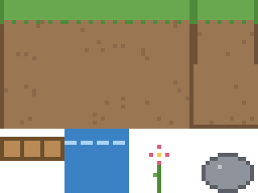
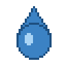

Deneme vize: Maddenin hâlleri
Gerçek sınavla aynı koşullarda, 90 dakikada, kısa bir şartnameyi çalışan bir sahneye dönüştürmek.
- İlk yedi haftanın kazanımlarını tek bir sahnede birleştirir.
- Bir şartnameyi süre kısıtı altında yorumlar.
- Tasarım tercihlerini öğretimsel gerekçeyle savunur.
Hazırlık
Başlamadan önce:
- Vize kılavuzu
- Boş bir Unity projesi (sınavda da boş projeyle başlanır)







Maddenin hâlleri
5. sınıf fen bilimleri · “maddenin katı, sıvı ve gaz hâllerini ayırt eder”
Öğrencinin bir karakteri yönlendirerek dolaşabileceği, üç bölgeli bir alan kurun: katı (buz), sıvı (su), gaz (buhar). Bölgeler görsel olarak ayırt edilebilsin, her birinde o hâle ait nesne bulunsun, karakter aralarında yürüyebilsin.
Toplama ya da seçme etkileşimi beklenmiyor; fizik geri çağrıları vize kapsamında değil. Teslim: kaydedilmiş sahne ve yarım sayfalık gerekçe metni.
90 dakika
Zamanlayıcıyı başlatın ve önerilen bölüşüme uyun: kurulum ve varlıklar ilk 20 dakikada biterse puanın üçte biri garanti olur. Son 10 dakikada yeni bir şey eklemeyin; derlenmeyen kod puan almaz.
Kendinizi puanlayın
Çalışmanızı gerçek vize ölçütleriyle puanlayın. Amaç not değil; sınava kadar neye çalışacağınızı bulmak.
Teslim ve kontrol listesi
- Sahnenin ekran görüntüsü
- Gerekçe metni
- Öz değerlendirme formu
Teslim etmeden önce listeyi işaretleyin:
- 90 dakikayı zamanlayıcıyla tuttum.
- Sahne kaydedildi; Console'da hata yok.
- Gerekçe metninin dört sorusu yanıtlandı.
- Öz değerlendirmede sınava kadar çalışacaklarımı yazdım.
Takıldığınızda
Hareket koduna hiç gelemedim
Kod derlenmedi
Gerekçeye zaman kalmadı
Sonraki adım
Final projenize taşıyın
Deneme sahnenizdeki bölge düzeni, final projenizde kazanımları mekâna yerleştirmenin küçük bir örneği. Gerekçe metnindeki dört soru, final raporunun da iskeleti.